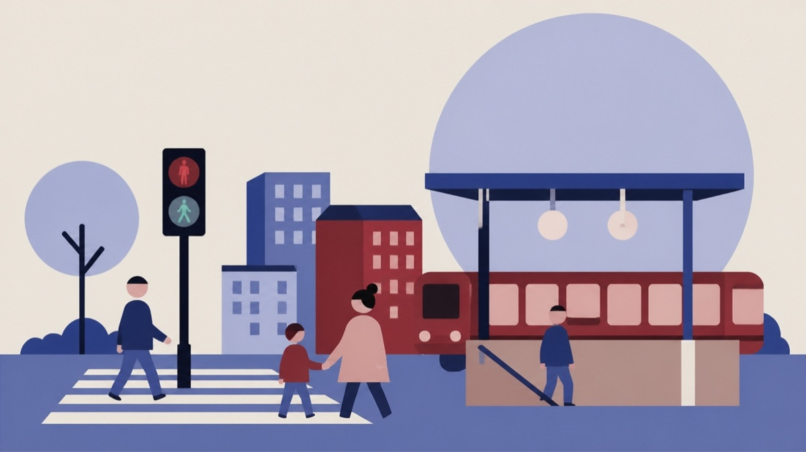

Besluttet 17. august, Teknik- og Havneudvalget, Læsø
Gang - og Cykelsti langs Nordkysten

Kort fortalt
- Hvem
- Teknik- og Havneudvalget, Læsø Kommune
- Hvornår
- Mandag 17. august 2026
- Status
- Besluttet. Udvalget har drøftet sagen, og ønsker ikke for nuværende at arbejde videre med sagen.
Er noget forkert her? Skriv til os
Læs hele sagen Kommunens egen tekst
Sagsfremstilling
Formanden for Teknik- og Havneudvalget har modtaget en henvendelse fra en borger
vedrørende etablering af en stiforbindelse langs den gamle redningsvej mellem Vesterø og
Østerby.
Borgeren har tidligere rettet henvendelse om samme emne til den daværende formand for
Teknik- og Havneudvalget med den begrundelse, at en stiforbindelse vil være et aktiv for både
øens fastboende og besøgende. Formanden for Teknik- og Havneudvalget ønsker derfor, at
sagen forelægges udvalget til drøftelse.
Forvaltningen har følgende bemærkninger til sagen.
På foranledning af den tidligere udvalgsformand, Jens Morten Hansen, har ønsket om
etablering af en sti langs nordkysten tidligere været drøftet på et samarbejdsmøde mellem
Teknik- og Havneudvalget, Teknisk Forvaltning og Naturstyrelsen, som er lodsejer på en stor
del af arealet.
Forvaltningen kan oplyse, at der på den pågældende strækning er registreret fortidsminder.
Disse registreringer kan vanskeliggøre mulighederne for at opnå de nødvendige tilladelser til
etablering af en sti.
Det har på samarbejdsmødet været fremført, at der på hedearealet mellem Læsø Klitplantage
og nordkysten er registreret rundhøje, som efter en nærmere vurdering muligvis er
fejlregistreret. Ifølge den tidligere udvalgsformand har han haft drøftet spørgsmålet med en
arkæolog fra Vendsyssel Historiske Museum, som deler denne vurdering. Uanset om
registreringen af rundhøjene måtte blive ændret, er der fortsat registreret andre fortidsminder
på strækningen, som vil skulle indgå i en myndighedsbehandling af projektet. Se
https://www.kulturarv.dk/fundogfortidsminder/Kort/
Registreringen af fortidsminder må derfor forventes både at forlænge sagsbehandlingstiden og
øge omkostningerne ved en eventuel ansøgning om etablering af en stiforbindelse.
Herudover skal det bemærkes, at Naturklagenævnet i 2000 ophævede en tilladelse, som det
daværende Nordjyllands Amt havde meddelt til etablering af cykelsti på dele af Redningsvejen.
Forvaltningen vurderer, at etablering af en stiforbindelse langs den gamle redningsvej vil kræve
en nærmere afklaring af de natur- og kulturhistoriske bindinger på strækningen samt en dialog
med de relevante myndigheder for at gennemføre projektet.
Sundhedsmæssige konsekvenser
Ikke relevant.
Miljømæssige konsekvenser
Ikke relevant.
Rekrutterings- og fastholdelseskonsekvenser
Ikke relevant.
Økonomiske konsekvenser
Ikke relevant.
Inviterede deltagere til punktets behandling
Sagsbehandler Stine Pagel Hansen.
Kompetence
Teknik- og Havneudvalget
Indstilling
FORVALTNINGSCHEF FOR TEKNIK OG HAVNE INDSTILLER,
at sagen drøftes.
Beslutning
Udvalget har drøftet sagen, og ønsker ikke for nuværende at arbejde videre med sagen.
Kilde: Læsø Kommune, Teknik- og Havneudvalget, referat fra mødet mandag 17. august 2026, punkt 4. Læs den originale sag hos kommunen.